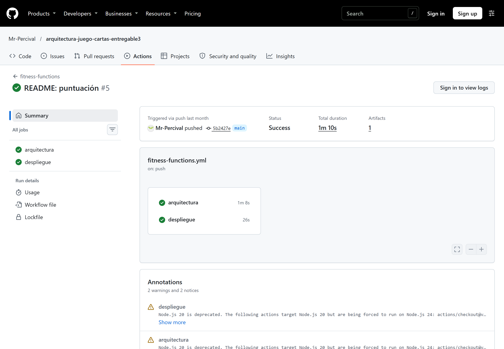
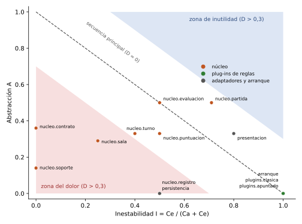

El pipeline está en .github/workflows/fitness-functions.yml y corre en GitHub Actions con cada push y cada pull request, sobre ubuntu-latest con Python 3.12. Tiene dos jobs:
pytest tests -v (fitness functions, pruebas del MVP e integración con PostgreSQL embebido por pgserver) y luego herramientas/metricas.py --exigir, que publica el reporte de Ca, Ce, I, A, D, CC y Deméter en el resumen del run y como artefacto reporte-metricas. Si una regla se rompe, el paso falla y el build queda en rojo.docker compose up -d --build y comprueba que el juego responde en /salud, que sirve la página y que el servidor creó el esquema en PostgreSQL.Las ocho ejecuciones del workflow en main terminaron en success. La última (run #8, commit cfd9d81, 26-11-2026, ya con los ajustes de la sección 3.4) duró 1 min 9 s: arquitectura 1 min 6 s, con 103 pruebas aprobadas en 49,90 s, y despliegue 30 s. Todos sus pasos salieron en verde. GitHub dejó dos advertencias (Node.js 20 obsoleto en actions/checkout@v4, setup-python@v5 y upload-artifact@v4) y dos avisos sobre la migración de ubuntu-latest; ninguno afecta las reglas. En local (26-11-2026, Windows 11) la suite completa da el mismo resultado: 103 aprobadas en 67,28 s, incluida la integración con PostgreSQL, que no se saltó. La salida está en docs/evidencia_pytest.txt.
| Regla | Qué verifica | Herramienta | Resultado |
|---|---|---|---|
| Prueba 1 · R2/R3 Independencia de reglas | Aislamiento de los plug-ins sin acoplamiento cruzado: Clásica no importa Apuntado ni al revés, un plug-in solo importa nucleo.contrato y el núcleo no conoce plug-ins concretos (los descubre por entry points). Una prueba extra comprueba que la regla sí detecta un import entre plug-ins. | PyTestArch | 6/6 aprobadas |
| Prueba 2 · R1 Aislamiento de capas | UI aislada del almacenamiento: presentacion no importa persistencia, el núcleo no depende de persistencia ni de presentación, ningún módulo interno importa el adaptador de PostgreSQL y solo persistencia importa el driver de base de datos. | PyTestArch | 6/6 aprobadas |
| Prueba 3 · R4 Sin ciclos | El grafo de dependencias entre los 13 componentes es acíclico (búsqueda en profundidad sobre los imports). Una segunda prueba confirma que el detector encuentra un ciclo a→b→c→a. | ast + DFS propio | 2/2 aprobadas |
| R5 Complejidad ciclomática | Evaluadores de combinaciones (kit del contrato, evaluación y plug-ins) con CC ≤ 10; resto del código CC ≤ 15. | radon | 10/10 aprobadas |
| R7 Contrato de plug-ins | Se descubren las dos variantes, cada una cumple el contrato, una variante nueva se registra sin tocar el núcleo y se rechaza un plug-in de otra versión mayor del contrato. | pytest | 7/7 aprobadas |
| R8 Rendimiento | p95 de la evaluación de cierre < 50 ms sobre 10 000 manos de 11 cartas con comodines. | pytest + perf_counter | 2/2 (p95 local: Clásica 4,70 ms; Apuntado 8,08 ms) |
| R9 Orquestación del cierre | Se publica el evento solo después de persistir, no se publica si la persistencia falla, de dos cierres simultáneos solo uno persiste y se rechaza al jugador fuera de turno. | pytest | 4/4 aprobadas |
| Métricas exigidas | Ningún plug-in con D > 0,5 y ningún evaluador con CC > 10. | metricas.py --exigir | Código de salida 0 |
Las 37 fitness functions corren junto con 7 pruebas de integración y 59 del MVP (unidad, aceptación de H1 a H6, arranque sin base y ajustes de la validación), para 103 en total.
Figura X
Última ejecución del workflow fitness-functions en main (GitHub Actions, run #8)

Las métricas salen de herramientas/metricas.py: la CC se mide con radon y Ca, Ce, I, A y D se calculan sobre los imports entre componentes (A = clases abstractas, es decir Protocol, ABC o con @abstractmethod, sobre el total de clases). El reporte completo está en docs/metricas/reporte_metricas.md; la corrida del 26-11 dio exactamente lo mismo que la del CI.
Complejidad ciclomática. En todo el código hay 241 bloques, con CC promedio 2,32 y máximo 10. Los bloques de evaluación de ternas, cuartas y cierres son 42, con promedio 3,24 y máximo 10: 31 quedan por debajo de 5 y 11 entre 5 y 10; ninguno pasa el umbral. El ordenamiento de cartas está dentro de es_escalera (ordena las cartas naturales por rango antes de revisar huecos y comodines).
| Archivo | Bloque | CC | Frente al umbral |
|---|---|---|---|
| plugins/clasica/plugin.py | CierreClasico433._que_falta | 10 | En el límite (≤ 10), no deseable |
| nucleo/contrato/combinaciones.py | es_escalera (incluye el ordenamiento) | 9 | Dentro, no deseable |
| nucleo/contrato/combinaciones.py | particiones | 8 | Dentro, no deseable |
| plugins/apuntado/plugin.py | UmbralEliminacion.evaluar | 8 | Dentro, no deseable |
| nucleo/contrato/combinaciones.py | mejor_cobertura | 7 | Dentro, no deseable |
| plugins/apuntado/plugin.py | UmbralEliminacion._desempatar | 6 | Dentro, no deseable |
| plugins/apuntado/plugin.py | CierreApuntado._tocar | 6 | Dentro, no deseable |
| nucleo/contrato/combinaciones.py | es_grupo | 6 | Dentro, no deseable |
| Los otros 34 bloques de evaluación | ≤ 5 | 31 de ellos < 5 (deseable) | |
_que_falta llega a 10 porque arma el mensaje de qué le falta al jugador (cuartas, ternas o descarte) con una rama por caso. Está en el límite; si crece, el paso natural es sacar cada caso a una función. Fuera de la evaluación, los bloques más altos son LiquidadorRonda.liquidar (9) y GameService.vista y GameService._analizar (8).
Acoplamiento y distancia a la secuencia principal.
| Componente | Tipo | Ca | Ce | I | A | D | Zona |
|---|---|---|---|---|---|---|---|
| nucleo.contrato | Núcleo | 8 | 0 | 0,00 | 0,36 | 0,64 | Dolor |
| nucleo.soporte | Núcleo | 6 | 0 | 0,00 | 0,14 | 0,86 | Dolor |
| nucleo.sala | Núcleo | 3 | 1 | 0,25 | 0,29 | 0,46 | Dolor |
| nucleo.registro | Núcleo | 1 | 1 | 0,50 | 0,00 | 0,50 | Dolor |
| nucleo.turno | Núcleo | 3 | 2 | 0,40 | 0,33 | 0,27 | Cerca |
| nucleo.partida | Núcleo | 2 | 5 | 0,71 | 0,50 | 0,21 | Cerca |
| nucleo.puntuacion | Núcleo | 2 | 2 | 0,50 | 0,33 | 0,17 | Cerca |
| nucleo.evaluacion | Núcleo | 1 | 1 | 0,50 | 0,50 | 0,00 | Cerca |
| plugins.clasica | Reglas | 0 | 1 | 1,00 | 0,00 | 0,00 | Cerca |
| plugins.apuntado | Reglas | 0 | 1 | 1,00 | 0,00 | 0,00 | Cerca |
| presentacion | Adaptador | 1 | 4 | 0,80 | 0,33 | 0,13 | Cerca |
| persistencia | Adaptador | 1 | 1 | 0,50 | 0,00 | 0,50 | Dolor |
| arranque | Composición | 0 | 9 | 1,00 | 0,00 | 0,00 | Cerca |
I = Ce / (Ca + Ce); D = |A + I − 1|. El script marca "cerca" si D ≤ 0,3 y, si no, zona del dolor cuando A + I < 1.
Los dos plug-ins de reglas tienen Ce = 1 (solo dependen del contrato) y Ca = 0 (nadie los importa: el registro los carga por entry points). Son totalmente inestables y concretos, así que caen sobre la secuencia principal (D = 0), que es lo que se busca en un microkernel: lo que cambia por variante es fácil de cambiar y no arrastra a nadie. Ningún componente cae en la zona de inutilidad.
La zona del dolor la ocupan sobre todo piezas del núcleo. nucleo.contrato (D = 0,64) y nucleo.soporte (D = 0,86) son las más estables (Ca = 8 y 6, Ce = 0) y casi todo lo que tienen son objetos de valor como Carta, Combinacion y CierreRonda, que son concretos a propósito. El riesgo de la zona del dolor es que cambiar algo ahí obliga a tocar a muchos; en el contrato eso está controlado con la versión mayor que valida R7, y los objetos de valor cambian poco. nucleo.registro y persistencia (D = 0,50) son concretos con una sola dependencia cada uno; nucleo.sala (0,46) es el único que se acerca a algo que valga la pena revisar, porque tiene tres dependientes y pocas abstracciones.
Figura X
Componentes en el plano abstracción–inestabilidad (datos de metricas.py)

Cohesión (LCOM4). Se midió con herramientas/cohesion.py (reporte en docs/metricas/cohesion_lcom4.md): LCOM4 cuenta los grupos de métodos de instancia que no comparten atributos ni se llaman entre sí; 1 es una clase cohesiva y más de 1 sugiere partirla. De 27 clases con dos o más métodos, 19 tienen LCOM4 = 1, entre ellas todas las del núcleo con estado (GameService con 18 métodos, TurnOrchestrator, MatchRecord, SalaService, PluginRegistry) y los dos adaptadores de persistencia. Las 8 restantes se explican por diseño, no por descuido:
| Clases | LCOM4 | Lectura |
|---|---|---|
VariantePlugin, IRepositorioPartidas, IBitacora, IEventos | 2 a 6 | Son protocolos (puertos): no tienen atributos, así que cada método queda aislado por definición. LCOM4 no aplica a interfaces. |
ReglaClasicaPlugin, ReglaApuntadoPlugin | 4 | Son fábricas sin estado del microkernel: cada método entrega una estrategia distinta (regla, tabla, política, esquema). Es la forma que exige el contrato. |
Partida, DeckDealer | 2 | Clases pequeñas: en Partida, ronda_id no usa el estado de la partida; en DeckDealer, construir y repartir no comparten estado (sin atributos). No ameritan partirse. |
La cohesión confirma la lectura de Deméter (4.3): GameService es cohesiva (LCOM4 = 1) pero grande, así que el candidato a partirse lo es por tamaño, no por mezclar responsabilidades.
Aislamiento y ciclos. Las pruebas 1 a 3 de la sección 4.1 pasan en todas las ejecuciones. El grafo de dependencias que reporta metricas.py lo confirma a mano: los plug-ins solo apuntan a nucleo.contrato, presentacion depende de nucleo.partida, nucleo.sala, nucleo.soporte y nucleo.turno pero nunca de persistencia, y persistencia solo depende de nucleo.soporte. Solo arranque conoce 9 de los 12 componentes (Ce = 9), porque es la raíz de composición donde se conectan los adaptadores. No hay ciclos.
Ley de Deméter. El script busca llamadas encadenadas sobre objetos ajenos y encontró 11 en 10 líneas, todas en el núcleo:
| Patrón | Dónde | Casos | ¿Aceptable? |
|---|---|---|---|
self._registro.resolver(variante).regla_cierre / .tabla_puntos / .politica_fin(config).evaluar / .esquema_configuracion | evaluador.py:23, liquidador.py:25, 38 (×2), 78, configuracion.py:23, servicio.py:162, 228 | 8 | Sí. Es el uso normal del microkernel: el núcleo le pide al registro el plug-in de la variante y luego le habla a ese plug-in a través del contrato. Esconderlo detrás de métodos del registro solo movería la cadena. |
self._salas.obtener(codigo_sala).codigo | servicio.py:124, 178, 239 | 3 | No del todo. Se usa para normalizar el código de sala que escribió el usuario. Se puede quitar con un método del repositorio de salas que devuelva el código normalizado; queda como mejora. |
Excepciones tragadas. Revisamos todos los except de src/. Los tres except Exception están en GameService: al empezar la partida (registra el error, reabre la sala y relanza como ErrorSala), al cerrar (relanza como ErrorSala; por ADR-05 la transacción no dejó nada a medias y el jugador sigue en su turno) y al anotar una jugada en la bitácora. Este último es el único que no relanza: deja el error en el log y la partida sigue. Es una decisión, porque la jugada ya ocurrió y la bitácora es de auditoría, pero significa que una falla de la base puede dejar huecos en la bitácora sin que el jugador se entere. Los demás except capturan tipos concretos y los traducen a errores del dominio o a respuestas HTTP 404.
Otros puntos. GameService (264 líneas, 27 métodos) es la clase más grande y concentra 5 de las 11 cadenas de Deméter; por ahora no pasa de los umbrales de CC, pero es la candidata a partirse si el MVP crece. No hay imports entre plug-ins, el núcleo no importa adaptadores y el driver de base de datos solo aparece en persistencia, todo verificado por las fitness functions y no solo por revisión.